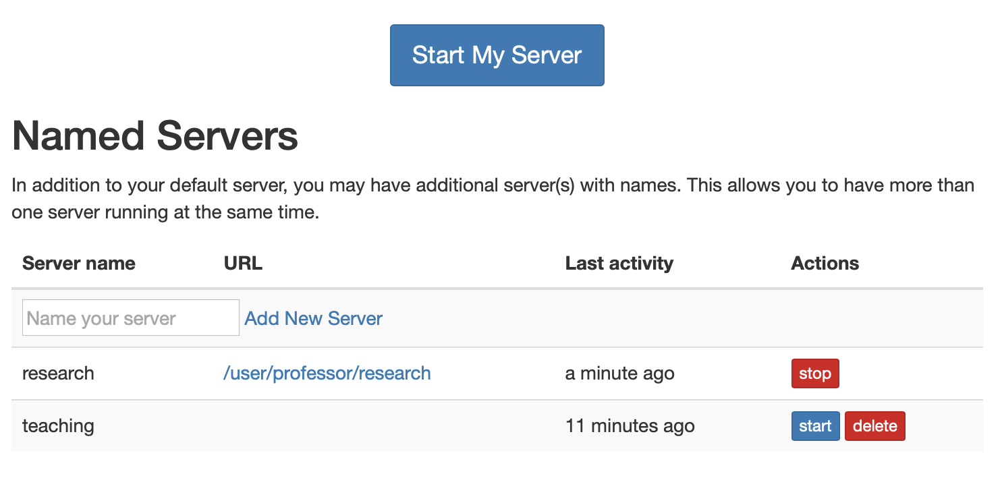
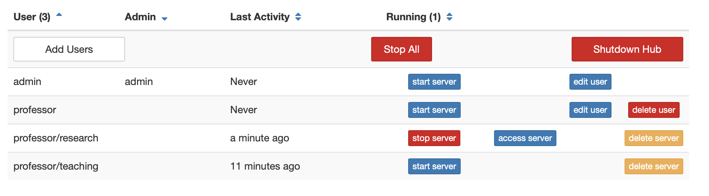

Deploying JupyterHub means you are providing Jupyter notebook environments for multiple users. Often, this includes a desire to configure the user environment in some way.
Since the jupyterhub-singleuser server extends the standard Jupyter notebook server, most configuration and documentation that applies to Jupyter Notebook applies to the single-user environments. Configuration of user environments typically does not occur through JupyterHub itself, but rather through system- wide configuration of Jupyter, which is inherited by jupyterhub-singleuser.
jupyterhub-singleuser
Tip: When searching for configuration tips for JupyterHub user environments, try removing JupyterHub from your search because there are a lot more people out there configuring Jupyter than JupyterHub and the configuration is the same.
This section will focus on user environments, including:
Installing packages
Configuring Jupyter and IPython
Installing kernelspecs
Using containers vs. multi-user hosts
To make packages available to users, you generally will install packages system-wide or in a shared environment.
This installation location should always be in the same environment that jupyterhub-singleuser itself is installed in, and must be readable and executable by your users. If you want users to be able to install additional packages, it must also be writable by your users.
If you are using a standard system Python install, you would use:
sudo python3 -m pip install numpy
to install the numpy package in the default system Python 3 environment (typically /usr/local).
/usr/local
You may also use conda to install packages. If you do, you should make sure that the conda environment has appropriate permissions for users to be able to run Python code in the env.
Jupyter and IPython have their own configuration systems.
As a JupyterHub administrator, you will typically want to install and configure environments for all JupyterHub users. For example, you wish for each student in a class to have the same user environment configuration.
Jupyter and IPython support “system-wide” locations for configuration, which is the logical place to put global configuration that you want to affect all users. It’s generally more efficient to configure user environments “system-wide”, and it’s a good idea to avoid creating files in users’ home directories.
The typical locations for these config files are:
system-wide in /etc/{jupyter|ipython}
/etc/{jupyter|ipython}
env-wide (environment wide) in {sys.prefix}/etc/{jupyter|ipython}.
{sys.prefix}/etc/{jupyter|ipython}
For example, to enable the cython IPython extension for all of your users, create the file /etc/ipython/ipython_config.py:
cython
/etc/ipython/ipython_config.py
c.InteractiveShellApp.extensions.append("cython")
To enable Jupyter notebook’s internal idle-shutdown behavior (requires notebook ≥ 5.4), set the following in the /etc/jupyter/jupyter_notebook_config.py file:
/etc/jupyter/jupyter_notebook_config.py
# shutdown the server after no activity for an hour c.NotebookApp.shutdown_no_activity_timeout = 60 * 60 # shutdown kernels after no activity for 20 minutes c.MappingKernelManager.cull_idle_timeout = 20 * 60 # check for idle kernels every two minutes c.MappingKernelManager.cull_interval = 2 * 60
You may have multiple Jupyter kernels installed and want to make sure that they are available to all of your users. This means installing kernelspecs either system-wide (e.g. in /usr/local/) or in the sys.prefix of JupyterHub itself.
sys.prefix
Jupyter kernelspec installation is system wide by default, but some kernels may default to installing kernelspecs in your home directory. These will need to be moved system-wide to ensure that they are accessible.
You can see where your kernelspecs are with:
jupyter kernelspec list
Assuming I have a Python 2 and Python 3 environment that I want to make sure are available, I can install their specs system-wide (in /usr/local) with:
/path/to/python3 -m IPython kernel install --prefix=/usr/local /path/to/python2 -m IPython kernel install --prefix=/usr/local
There are two broad categories of user environments that depend on what Spawner you choose:
Multi-user hosts (shared system)
Container-based
How you configure user environments for each category can differ a bit depending on what Spawner you are using.
The first category is a shared system (multi-user host) where each user has a JupyterHub account and a home directory as well as being a real system user. In this example, shared configuration and installation must be in a ‘system-wide’ location, such as /etc/ or /usr/local or a custom prefix such as /opt/conda.
/etc/
/opt/conda
When JupyterHub uses container-based Spawners (e.g. KubeSpawner or DockerSpawner), the ‘system-wide’ environment is really the container image which you are using for users.
In both cases, you want to avoid putting configuration in user home directories because users can change those configuration settings. Also, home directories typically persist once they are created, so they are difficult for admins to update later.
By default, in a JupyterHub deployment each user has exactly one server.
JupyterHub can, however, have multiple servers per user. This is most useful in deployments where users can configure the environment in which their server will start (e.g. resource requests on an HPC cluster), so that a given user can have multiple configurations running at the same time, without having to stop and restart their one server.
To allow named servers:
c.JupyterHub.allow_named_servers = True
Named servers were implemented in the REST API in JupyterHub 0.8, and JupyterHub 1.0 introduces UI for managing named servers via the user home page:

as well as the admin page:

Named servers can be accessed, created, started, stopped, and deleted from these pages. Activity tracking is now per-server as well.
The number of named servers per user can be limited by setting
c.JupyterHub.named_server_limit_per_user = 5